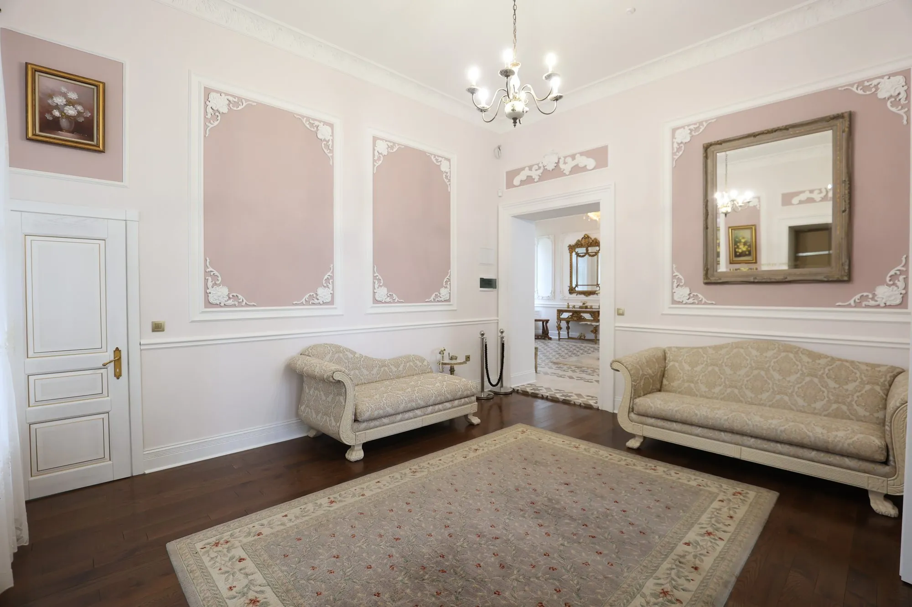
Підгорецький палац розташований у селі Підгірці Стрийського району Львівської області, поруч із готелем «Підгорецький Маєток». Тут можна дізнатися про історію маєтку, відвідати палац і прогулятися парком.
У 1734 році Юзеф Александер Яблоновський заснував заміський палац у родовому маєтку в Підгірцях на місці колишнього мисливського замку, який існував тут ще з XVII століття.
У 1815 році Підгірці стали власністю родини Бруницьких, яка володіла маєтком аж до 1939 року. Навколо палацу був розташований парк площею у 8 гектарів, висаджений у 1892 році за наказом графа Бруницького. Цей парк вважається першим дендропарком Галичини.
На початку XX ст. розсадник Бруніцького займав площу 55 гектарів і щорічно продукував 150 тисяч саджанців плодових дерев 159 сортів, 30 тисяч декоративних кущів 360 сортів, 275 різновидів троянд, 65 видів хвойних і 27 сортів бузку.
Від початку 2014 року палац перейшов у власність трьох місцевих родин, які послідовно відновлюють цю архітектурну пам'ятку. Вони провели низку заходів з протиаварійного відновлення і частково відновили інтер'єри десяти кімнат.
Сьогодні палац відкритий для відвідувачів — ми організовуємо екскурсії та надаємо можливість використовувати приміщення для фотосесій та зйомок.
Палац має свою таємницю — легенду про «Паню заклєнту», проклятій жінці, яка нічними годинами блукає палацом у білому одязі. За легендою, під час визвольної війни Богдана Хмельницького князь Яблоновський залишив свою молоду дружину. Вона знайшла відраду в козацьких обіймах, і з тих пір її привид прогулюється палацом у очікуванні коханого.
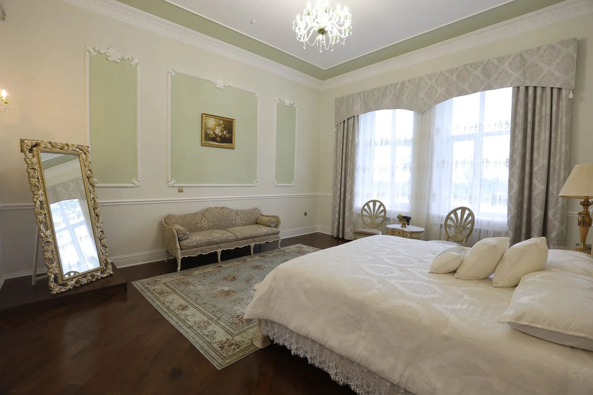
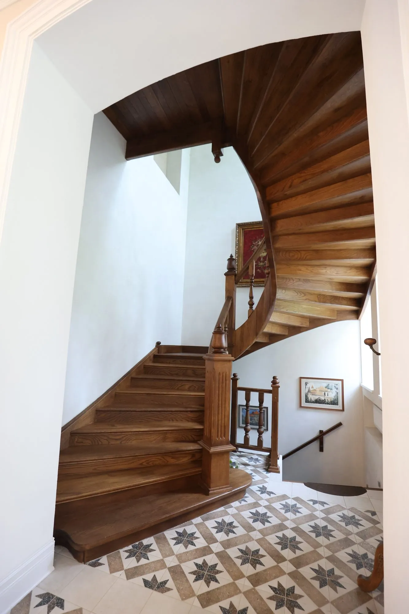
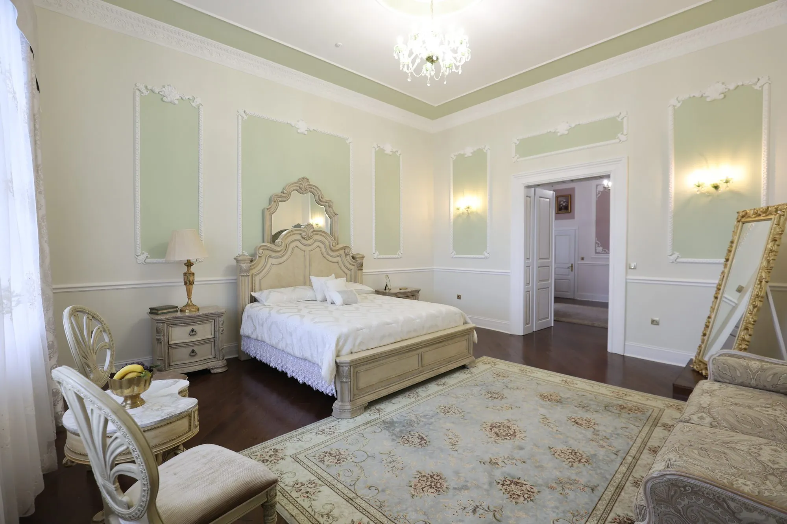
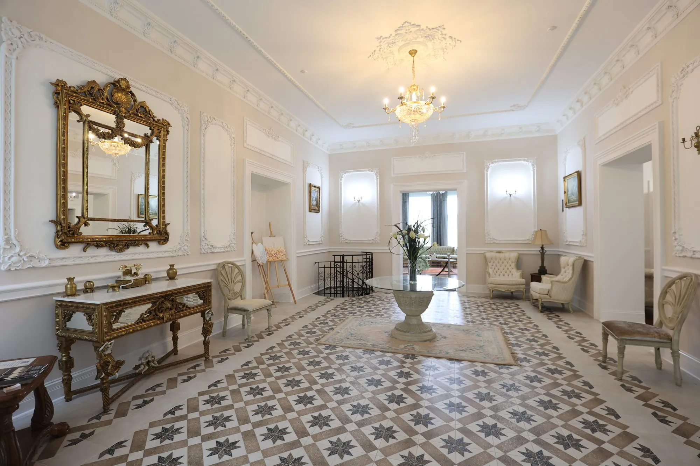
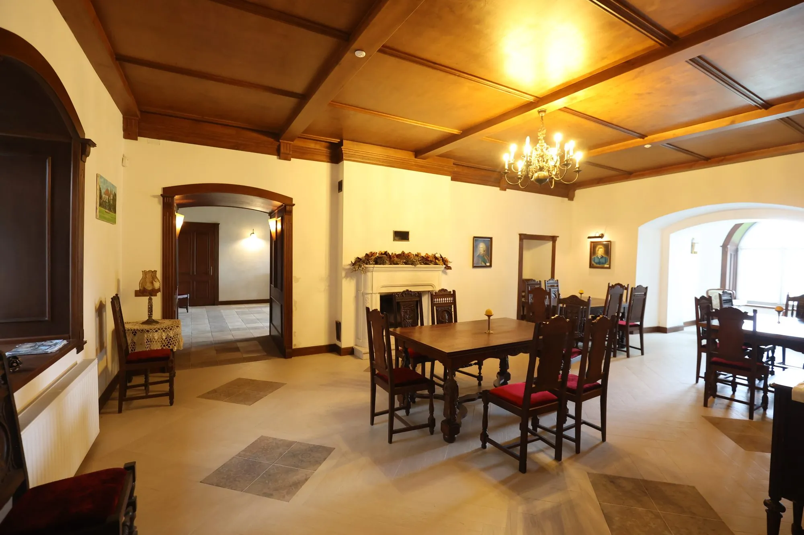
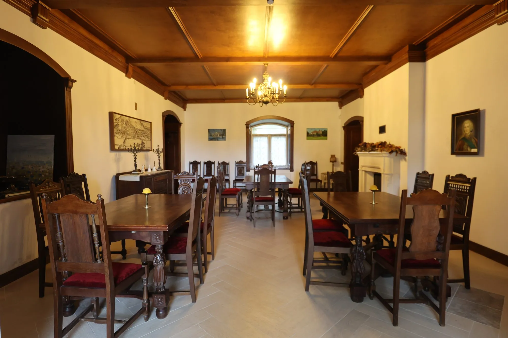
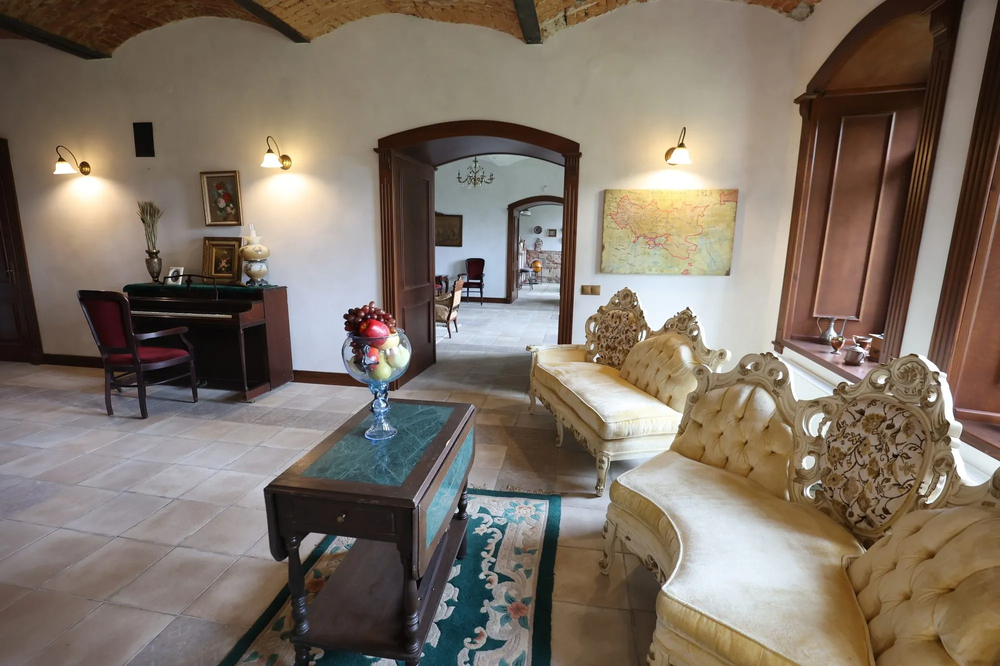
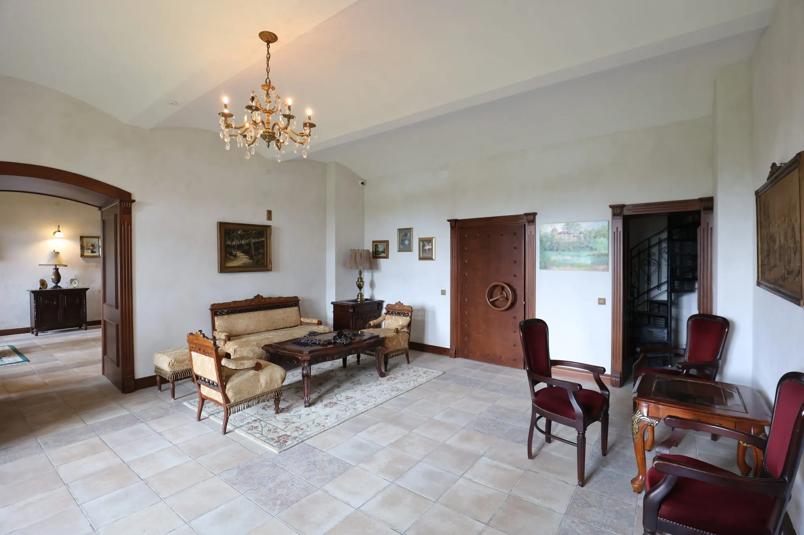
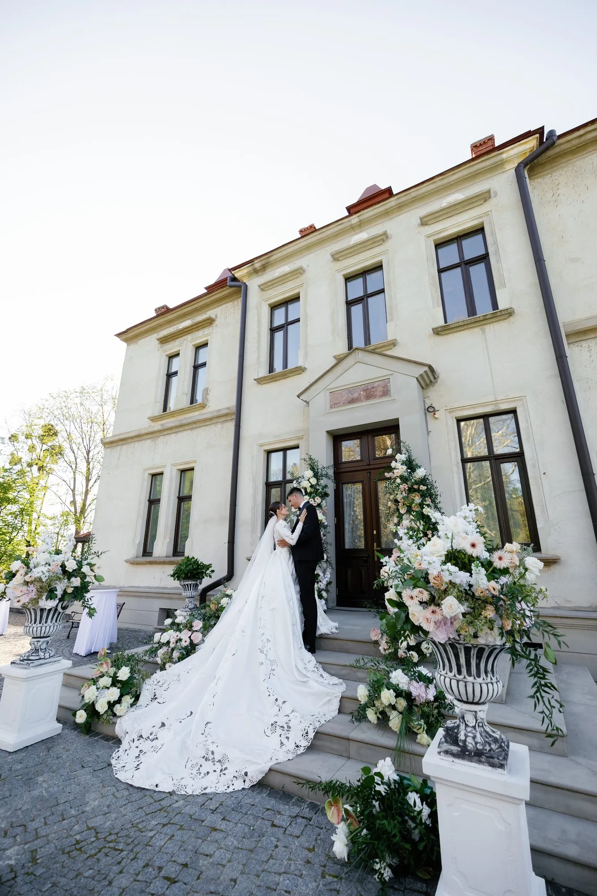
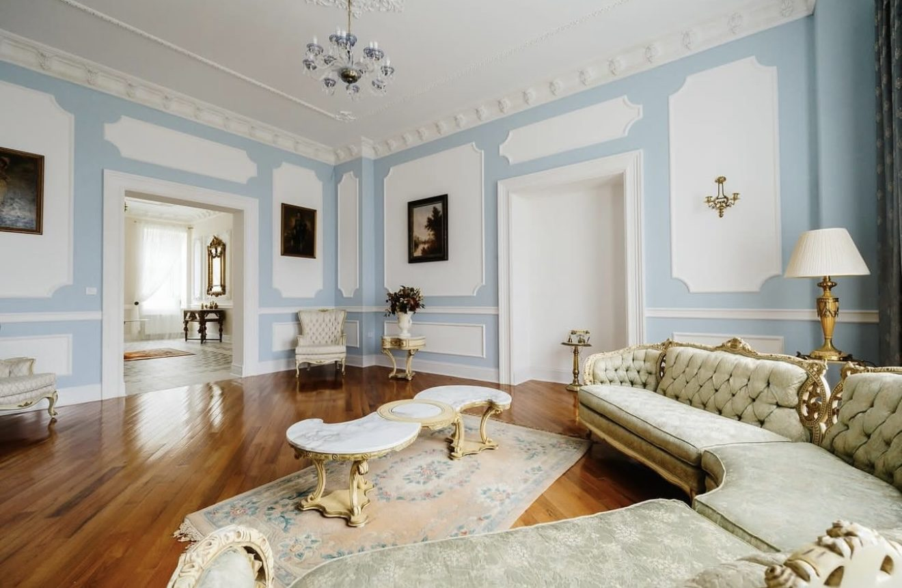
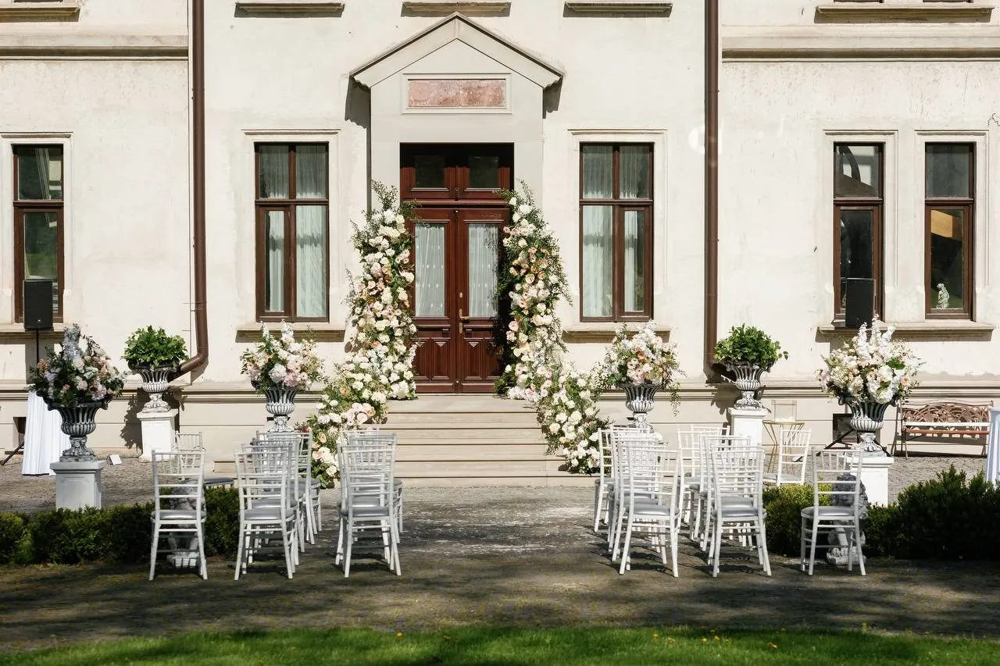
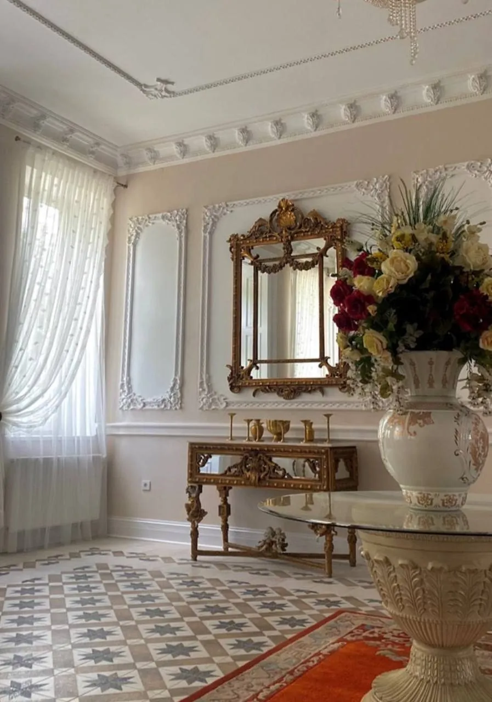
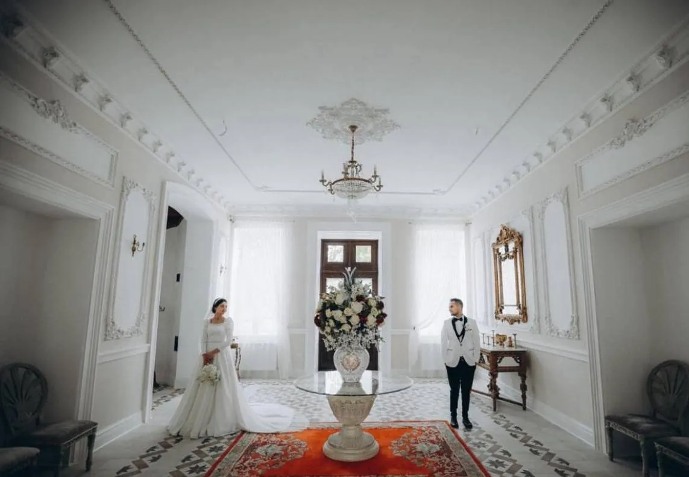
Запишіться на екскурсію або організуйте фотосесію в історичних інтер'єрах